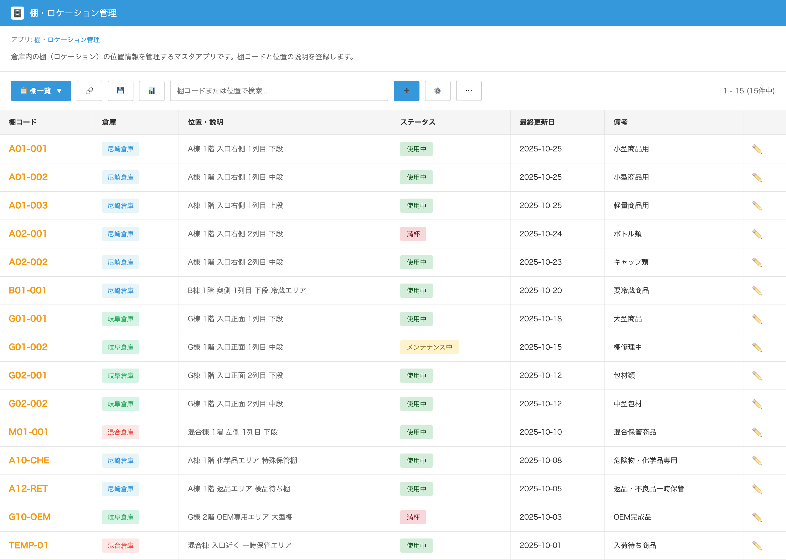

UI Spec
Location Master
Version 1.0 / 作成日: ________
UI Screen Specification – ロケーション管理（Location Master）
対象画面: ロケーション管理（倉庫ロケーションのマスタ）一覧画面
想定利用者: 倉庫担当者・在庫管理担当・運用担当・管理者
1. 画面の目的（ビジネス上の役割）
本画面「ロケーション管理」は、倉庫内での商品配置（棚・段・列など）の
ロケーション情報の基盤マスタ を管理する画面です。
出庫・入庫・棚移動・棚卸すべての基礎となるため、Credie の倉庫運用における
Single Source of Truth となります。
1.1 本画面が影響する業務領域
- 実在庫管理（棚・LOT 単位の在庫保持）
- ピッキング（出庫）タスクの指示先ロケーション
- 棚入れ（Putaway）タスクの配置先管理
- 棚卸し（Stocktaking）のロケーションリスト
- 在庫移動（Location Transfer）の From/To 情報
2. ユーザーストーリー（利用シナリオ）
- 倉庫担当者が新しい棚を追加したいときにロケーションを作成する
- 棚卸前にメンテナンス中ロケーションを一時的に停止する
- ピッキング順序の調整のためにロケーションの並び順を変更する
- 不良棚・使用停止棚を「ステータス：停止」に設定して作業対象から除外する
3. 主要機能
3.1 ロケーション一覧表示
- ロケーションコード・名称・棚情報・行/段・状態などを一覧表示
- 検索ボックスでロケーション名・コード検索が可能
- Kintone 標準の一覧表示＋グループ化が可能
3.2 新規ロケーション登録
- 棚番号・列番号・説明文などを登録
- 倉庫作業の分類に応じてロケーション属性を設定
3.3 編集 / 更新
- 倉庫レイアウト変更に応じて名称や棚番号を更新
- 誤登録の修正も可能
3.4 ステータス管理
- 「使用中」「停止」「メンテナンス中」などの状態を変更
- 作業対象外ロケーションはピッキングタスクに利用されない
4. 画面レイアウトと項目
4.1 一覧表示項目
| 項目名 | 説明 |
|---|
| ロケーションコード | ロケーションを識別する一意コード |
| 名称 | 棚・エリア名などの表示名 |
| 階層・説明 | 棚番号・段・列の説明 |
| ステータス | 使用中 / 停止 / メンテナンス中 を表示 |
| 最終更新日 | 最新の更新日時 |
| 備考 | メモ・用途など |
| 操作 | 編集ボタン（鉛筆アイコン） |
4.2 スクリーンショット

図1. ロケーション管理（Location Master）一覧画面
5. Business Impact（業務への影響）
- ロケーション設定ミス → ピッキング誤り・誤出荷のリスク
- Putaway ミス防止 → 正確な棚配置により倉庫作業の効率化
- 棚卸し作業の正確性向上
- メンテナンス棚の明確化 → 誤使用防止
6. Scope / Out of Scope
6.1 In Scope
- ロケーションマスタの登録/編集/使用可否管理
- 画面 UI の最適化
- 倉庫作業タスクへのロケーション連携
6.2 Out of Scope
- 倉庫配置図（マップ）表示
- ロケーション自動割り当てアルゴリズム
- 棚卸し計算ロジック
7. お客様に確認いただきたい点
- ロケーションの分類（棚/段/列）は現場運用と一致していますか？
- ステータス（使用中/停止/メンテナンス）は十分ですか？
- 管理項目に不足している項目はありませんか？
- ロケーション数が多い場合、追加フィルタは必要ですか？